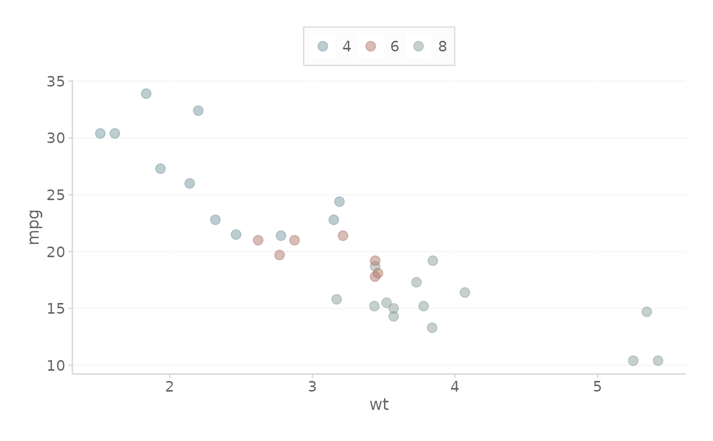
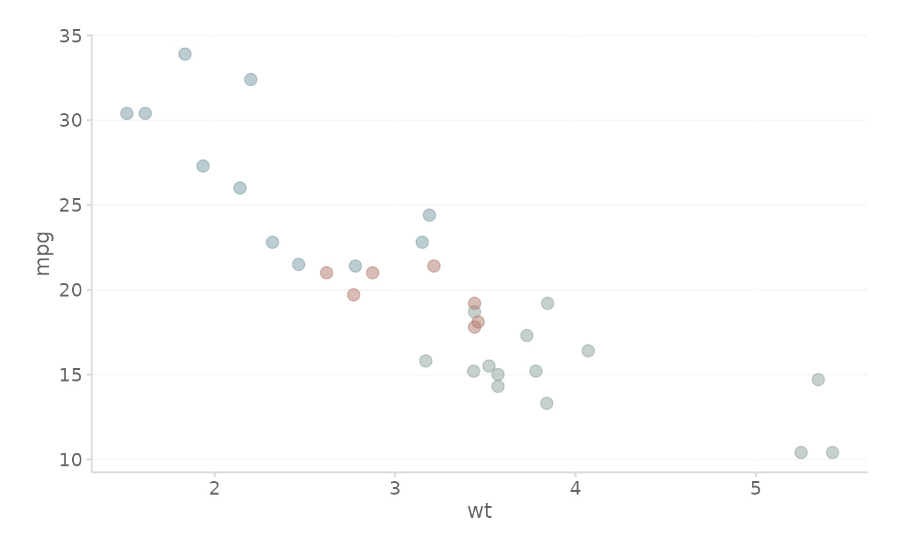
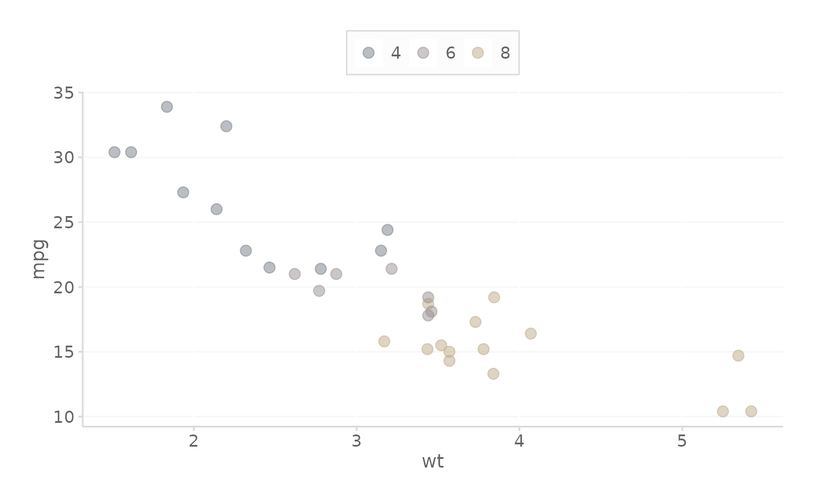

ggplot Color Scale
scale_color_dc.Rdggplot Color Scale
Usage
scale_color_dc(
overrideWithFill = FALSE,
colorOffset = 0,
reverseOrder = FALSE,
darkenPaletteForTextGeoms = FALSE,
useColorBlindPalette = FALSE,
colorBlindPaletteName = "safe",
...
)Arguments
- overrideWithFill
TRUE if you want to use the fill palette for the color mapping. (Default FALSE)
- colorOffset
Offsets the ordering of the palette. E.g., colorOffset = 2 would move the first two colors to the end of the palette, starting at the 3rd color.
- reverseOrder
Logical, TRUE reverses the default order of the palette. Default FALSE. Applied after colorOffset.
- darkenPaletteForTextGeoms
Logical, if TRUE then the palette will be darkened slightly.
- useColorBlindPalette
Logical, if TRUE uses color blind friendly palette instead of style.
- colorBlindPaletteName
Name of colorblind friendly palette. Use `cols4all::c4a_palettes()` for available palettes.
- ...
Additional parameters passed to either scale_color_manual or scale_fill_manual functions, such as guide = 'none'
Examples
library(ggplot2)
library(styles)
# Create basic ggplot object
ggplotObject <- ggplot(mtcars, aes(y=mpg, x=wt, color=as.factor(cyl))) +
geom_point(size = 3, alpha = 0.5)
# Add the color
ggplotObject + scale_color_dc()

# Add the fill
ggplotObject + scale_color_dc(overrideWithFill = TRUE)
# Add the color with no legend using an optional parameter
ggplotObject + scale_color_dc(guide = 'none')

# Offset the colors by 1
ggplotObject + scale_color_dc(colorOffset = 1)
# Darken text when over filled layers
ggplot(mtcars, aes(y=mpg, x=wt, color=as.factor(cyl))) +
geom_point(aes(fill = as.factor(cyl)),
size = 10,
pch = 21,
color = 'transparent',
alpha = 0.9
) +
geom_text(aes(label = round(mpg, 0))) +
scale_fill_dc() +
# KEY - darken the text so that it is easier to view
# Over fill
scale_color_dc(darkenPaletteForTextGeoms = TRUE) +
theme_dc()
# reverse the order of the palette
ggplotObject + scale_color_dc(reverseOrder = TRUE)

# Use color blind friendly palette
ggplotObject + scale_color_dc(useColorBlindPalette = TRUE)